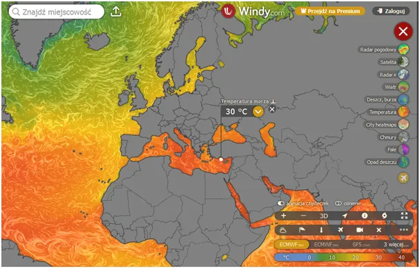
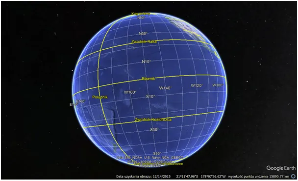
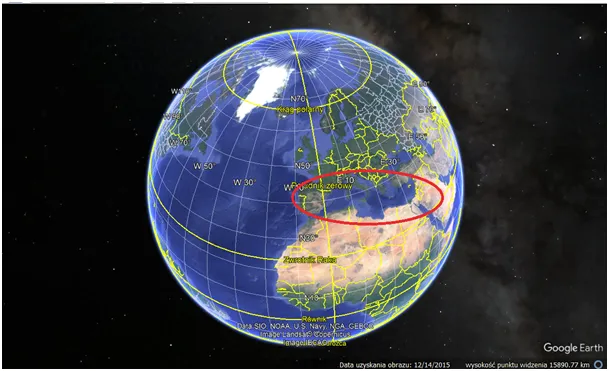
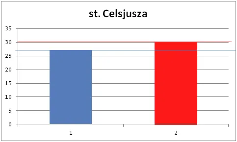
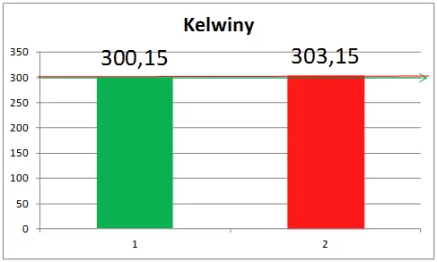

Jak spadek aktywności Słońca wpływa na cenę bakłażanów, ale tylko poza UE!
Morze Śródziemne w tym roku jest wyjątkowo ciepłe, co zapowiada na jesień duży kontrast termiczny między północą Europy a południem. Zmiany prądów oceanicznych powodują, że nie padają u nas typowe deszcze z niżów rodzących się nad ciepłym Morzem Śródziemnym. Od początku roku te niże stacjonarnie powodowały ciepłe opady na południu, czego skutkiem była intensywna wegetacja i niskie ceny warzyw w Turcji. W maju osobiście kupowałem tam bakłażany poniżej 1 zł, gdy u nas były po blisko 20 zł. Media epatują ognistymi mapkami, sprawdźmy więc, co się dzieje.

Temperatura wody w oceanach ma podobno średnio 3,5 st. C. To, co widzimy na mapkach to jest temperatura powierzchni oceanów i waha się między 30 st. C na równiku i minus kilka w okolicach pod biegunowych. Tam woda nie zamarza tak łatwo, ponieważ jest słona i jest w ciągłym ruchu. Anomalia cząstek wody powoduje, że jest ona najgęstsza w temp. 4 st. C i takie temperatury panują na dnie dużych zbiorników i oceanów, powyżej woda jest albo cieplejsza albo zimniejsza, wyjaśniam to w tym felietonie: https://pawelklimczewski.pl/2023/01/17/cud-wody/


Morze Śródziemne jest sporym zbiornikiem, jednak stanowi tylko 0,0028 (niecałe 3 promile) wód na Ziemi, jednak jego termika istotnie wpływa na klimat Europy. Gdy od ponad dekady obserwujemy ochładzanie się całej planety mamy lokalnie zjawisko odwrotne. Powód może być tylko jeden: spadek ilości chmur na tym obszarze. W sytuacji, gdy oceaniczny zimny Prąd Kanaryjski dominuje w pobliżu zachodniego wybrzeża Afryki woda tam paruje wolniej i zachodnie cyrkulacje nie przynoszą obłoków łagodzących dopływ słonecznej energii. Z powodu tego zimnego prądu mamy Saharę.
O ile Morze śródziemne jest cieplejsze na powierzchni? Obiektywną wartość zgromadzonej energii możemy wyrażać tylko w Kelwinach, opisałem to tu: https://pawelklimczewski.pl/2024/04/14/wariancja-kontra-wariactwo/
Posługiwanie się stopniami Celsjusza prowadzi nas na manowce, co ilustrują wykresy. Proporcja ilości energii w roku ciepłym z temperaturą wody 30 st. C, czyli 303,15 Kelwinów do roku typowego z temperaturą 27 st. C, czyli 300,15 Kelwinów to 1% więcej (303.15/300.15-1=0.009995) a nie jakby sugerował rachunek zrobiony w st. Celsjusza 11% (30/27-1=0.111111).


Każdy, kto kąpał się w ciepłym morzu wie, że wystarczy zanurkować na 2-3 metry, aby poczuć, że woda tam jest znacznie zimniejsza. Głębia Morza Śródziemnego ma stałą temperaturę ok. 12 st. C. na kilku km głębokości. Jest to sytuacja wyjątkowa, bo wody denne mają temperatury zbliżoną do 4 st. Wynika to z faktu dużego zasolenia i braku dopływów zimnych wód, a połączenie tego morza z oceanami jest bardzo małe.
Podsumowując: W bilansie planety temperatura wód powierzchniowych tego zbiornika jest pomijalnie mała, ale jest istotna dla pogody w jego otoczeniu. Zima wyrówna rachunki, ale wcześniej proces studzenia tego zbiornika da długą jesień na południu Europy i wielką niewiadomą dla północy. Rozkład cyrkulacji na Atlantyku zdecyduje ile tego ciepła i w jakiej formie przekroczy Alpy i Karpaty i dotrze do nas. Proces studzenia tego akwenu to okres od września do końca lutego.
Jest bardzo ważna nauka z tego przypadku. Światowe oceany mają bardzo dużą bezwładność cieplną liczoną przynajmniej w latach, ale bardziej w dekadach. Nie jest to wyjaśnione, skrajne opinie mówią, że może to być nawet blisko 200 lat zanim ciepło przechwycone od Słońca przez ocean odleci na zawsze w Kosmos. Morze Śródziemne jest zbiornikiem stosunkowo małym, który się nagrzewa i wyziębia w cyklach rocznych. Z tego powodu przeróżne mogą być koincydencje temperatur w regionie. Dwa cykle słoneczne jakie znamy mają 107 i 11 lat. Nieznany jest czas opóźnienia termiki oceanów do tych cykli, więc będziemy musieli poczekać i zobaczyć przyszłość na własne oczy. Kto mówi, że wie jak dokładnie będzie, stracił rozum, a raczej rozum mu został odebrany. Rozum jest darem, z którego należy korzystać rozumnie, czyli logicznie.
Paweł Klimczewski